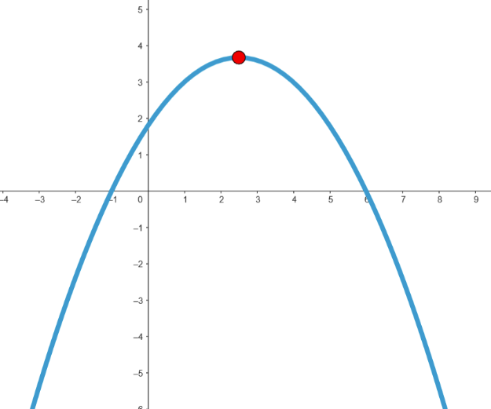
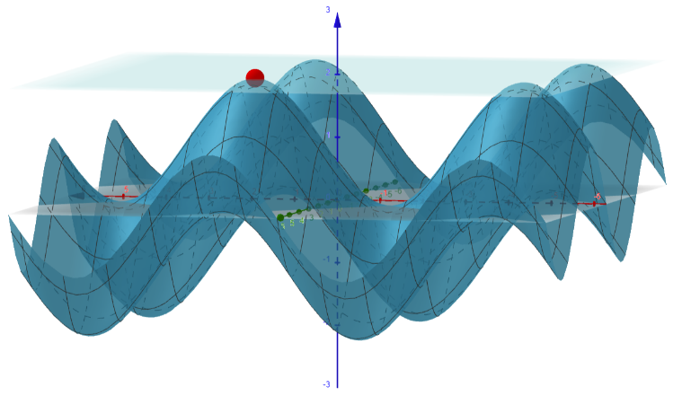
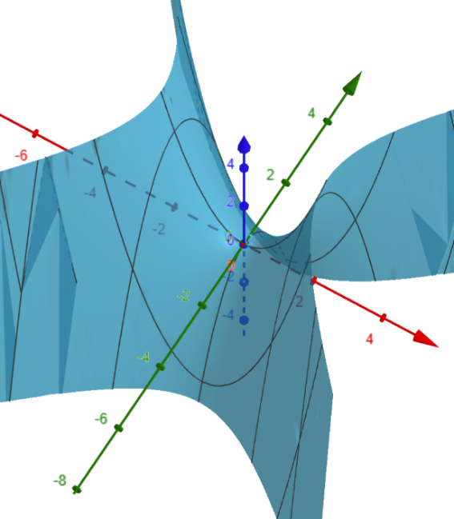

Lesson 24: Extrema of Functions of Two Variables

In Calculus I, we found extrema by examining critical points, which are points where the first derivative is zero or undefined. At such points, the graph of a continuous function might turn in such a way that an extremum occurs. Now we focus on functions of two variables, \(f(x, y)\). Likewise, we will examine critical points!
A critical point of \(f(x, y)\) is a point \((x_0, y_0)\) where both partial derivatives are zero, \(f_x = f_y = 0\), or where one of the partial derivatives does not exist. A point where \(\nabla f = \mathbf{0}\) is also called a stationary point.

Imagine a point on the graph of \(f(x, y)\) where \(\nabla f = \mathbf{0}\). Since \(D_{\mathbf{u}}f = \nabla f \dotp \mathbf{u}\), the directional derivative is zero in every direction \(\mathbf{u}\) at that point. Regardless of the direction we face, our instantaneous rate of change is zero. This is where the name “stationary point” comes from.
Such points are places to examine for possible extrema!
A saddle point is a stationary point that is not a relative extremum. You will encounter these! One is illustrated below.

Suppose \((x_0, y_0)\) is a critical point of \(f(x, y)\) where \(f_x = f_y = 0\), and the second-order partial derivatives of \(f\) are continuous. To classify the critical point, we begin by finding \(D\).
The Discriminant
We have the following tests.
- If \(D > 0\) and \(f_{xx}(x_0, y_0) > 0\), then there is a relative minimum at \((x_0, y_0)\).
- If \(D > 0\) and \(f_{xx}(x_0, y_0) < 0\), then there is a relative maximum at \((x_0, y_0)\).
- If \(D < 0\), then there is a saddle point at \((x_0, y_0)\).
- If \(D = 0\), then the test is inconclusive.
An Example
Find and classify the critical points of the function below.
Find the first partial derivatives, and set them equal to zero.
From \(f_x = 0\), either \(x = 0\) or \(y = 1\).
- If \(x = 0\): \(3y^2 - 6y = 0\), so \(3y(y - 2) = 0\), giving \(y = 0\) or \(y = 2\).
- If \(y = 1\): \(3x^2 + 3 - 6 = 0\), so \(x^2 = 1\), giving \(x = 1\) or \(x = -1\).
The critical points are \((0, 0)\), \((0, 2)\), \((1, 1)\), and \((-1, 1)\). Next, find the second partial derivatives.
Classify each critical point.
| Point | \(f_{xx}\) | \(f_{yy}\) | \(f_{xy}\) | \(D\) | Result |
|---|---|---|---|---|---|
| \((0, 0)\) | \(-6\) | \(-6\) | \(0\) | \(36\) | Relative maximum |
| \((0, 2)\) | \(6\) | \(6\) | \(0\) | \(36\) | Relative minimum |
| \((1, 1)\) | \(0\) | \(0\) | \(6\) | \(-36\) | Saddle point |
| \((-1, 1)\) | \(0\) | \(0\) | \(-6\) | \(-36\) | Saddle point |
The relative maximum value is \(f(0, 0) = 2\), and the relative minimum value is \(f(0, 2) = 8 - 12 + 2 = -2\). The saddle points are \((1, 1, 0)\) and \((-1, 1, 0)\).